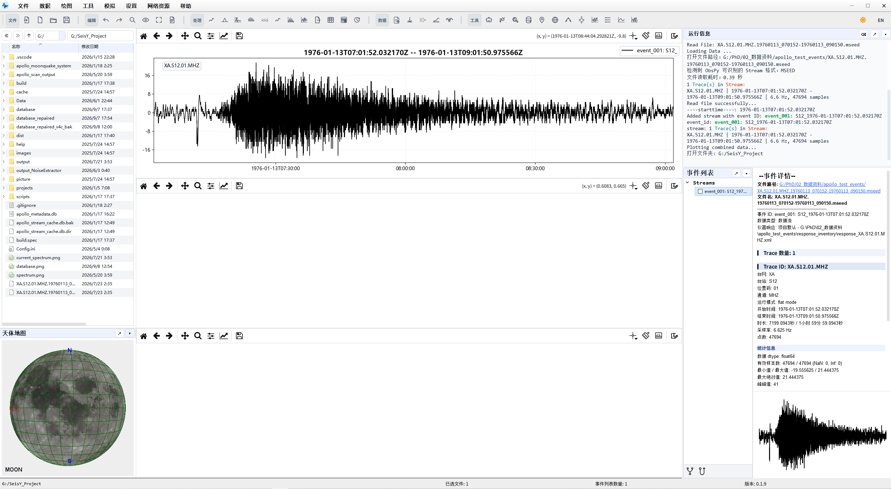
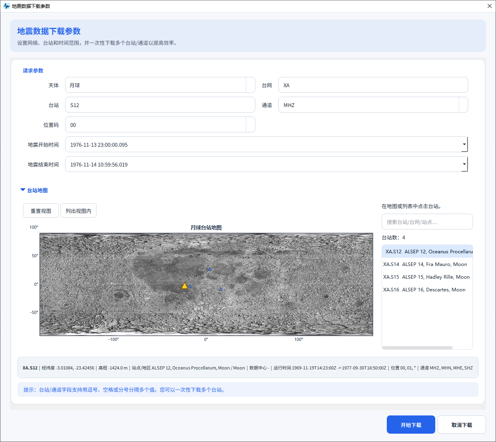
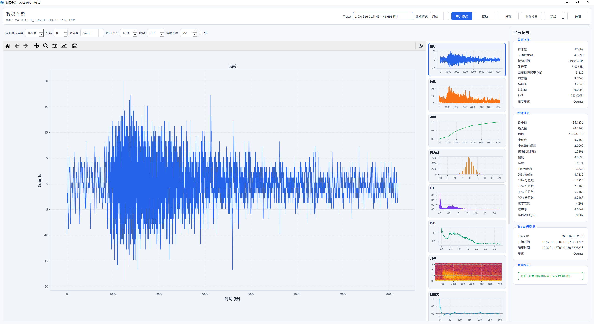
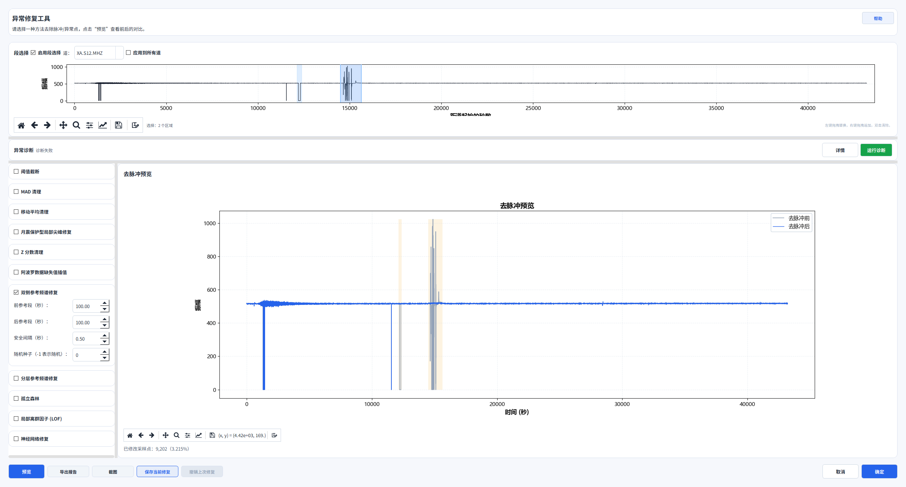
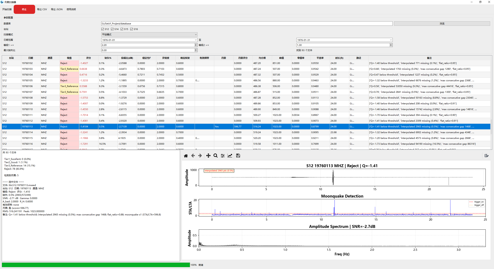
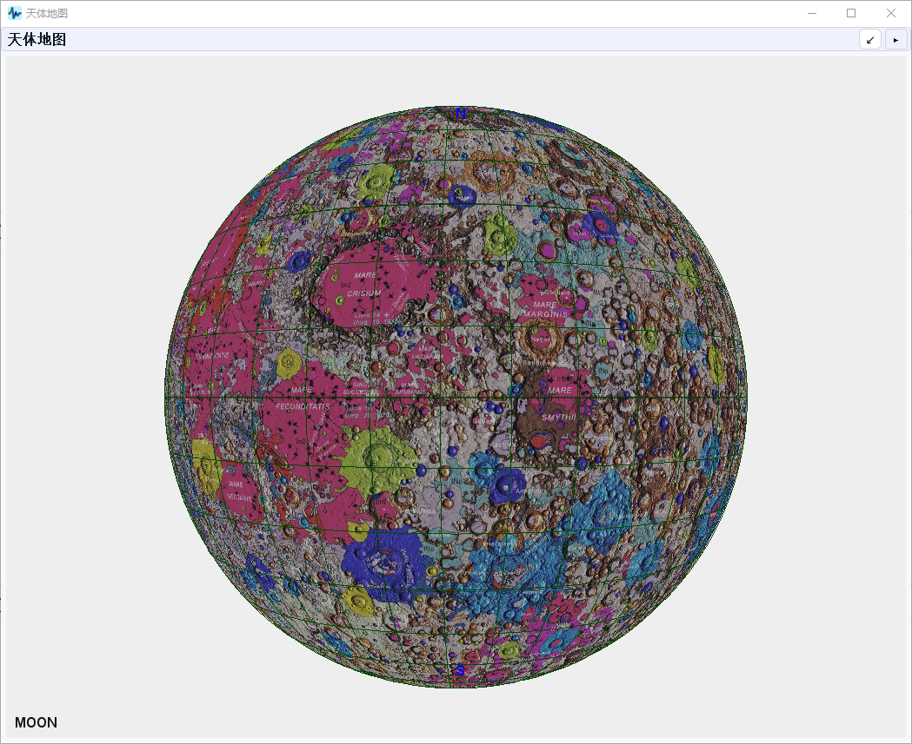

SEISY · SEISMOLOGY DESKTOP PLATFORM
SeisY
地震数据处理与分析平台
面向地震、月震与行星地震研究——从数据下载到高级分析，一个桌面平台全部装下。

20+
专业工具
30+
处理算法
8
数据格式
双语
双主题
01 / DATA
数据从哪来？在线下载，地球和月球都支持
通过 FDSN 数据中心在线下载波形，既支持地球台网，也支持 Apollo 月球数据（XA 网络 S12/S14/S15/S16）。台网、台站、时间范围批量设置，下载完自动预览波形。

选好台网、台站和时间范围，月震数据一键到手。
02 / PROCESSING
波形处理与频谱分析：30+ 算法预处理链
wf
20+ 波形处理
去均值 / 去趋势 / 去仪器响应，10 种插值，6 种加窗，带通与中值滤波。
sp
完整频谱链
振幅谱、PSD、Welch 平均、时频图、滑动相关、SNR 评估。
8
8 种格式互通
MiniSEED、SAC、SEG-Y、SEG2、ASCII、TXT、CSV 导入导出。

波形、包络、FFT、PSD、时频……数据质量一次看清。
03 / REPAIR
异常修复引擎：月震数据的"医生"
Apollo 月震数据来自上世纪 70 年代，缺失值、尖峰、异常段是家常便饭。SeisY 用滑动峰态检测自动定位异常，频谱替换修复，还内置"月震保护"尖峰检测——去掉噪声，不碰真实信号。

修复前后并排预览，频谱验证，支持手动写回与双库对比。
04 / SCAN
月震扫描：批量筛查候选事件
几个月、几年的连续记录，靠人工翻不现实。扫描器按等级、评分、信噪比、稳定性批量筛查，与波形、STA-LTA、频谱联动显示。

一次扫完整月数据，候选事件一目了然。
05 / INVERSION
定位、射线追踪与简正模
台站、波形、拾取、速度模型与地图联动，支持地球、月球和自定义行星模型的震源反演；射线正演 / 反求、自由振荡分析也在同一个平台里完成。

月震定位工作流，一个窗口内闭环。
06 / MOON
3D 月球地质图
USGS 月球统一地质图贴上三维球面，拖拽旋转、缩放，月海与地质单元可交互查看，台站与震源位置联动显示。

换个方式，看月球。
谁适合用 SeisY？
- 地球物理、地震学方向的研究者和研究生
- 处理 Apollo 月震数据、做行星科学的人
- 希望一个软件走完"下载—处理—分析—成图"的师生
少一点搬运，多一点发现
当前版本 v0.1.9（2026-09-10）。Windows 安装版、免安装网页版都在官网。
前往官网下载试用